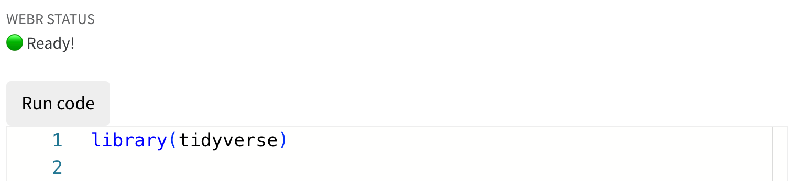

2 Jumping essentials
2.1 The essentials
Before you jump into the water it can be of benefit when you know more about the water. What is the temperature? Is it really cold or just nice and warm? How high is the jump? Do you need to jump first 5 meters from a diving board or can you already feel the water with your toes?
This first chapter will give some basic programming essentials that will allow you to jump easier. Also it can be used as a reference for when you need to make the jump again
2.1.1 Find your info online and in documentation
R has so many functions that it is impossible to know everything by heart. Documentation and the internet are always your best friend.
Stackexhange is an excellent resource. 90 to 99% of your questions related to how you should use your R and tidy functions has been asked before by others. The nice thing is that, most often, the questions include a snippet of code that makes the problem reproducible. More importantly, almost all questions have been accurately answered in multiple ways.
Other resources that often come up in my search results are either forums on POSIT community, Reddit, or Github discussions or issues. These are more forum-like comments, with not such a good solvability structure as stackexchange.
Then there are many more resources that somehow scrape the internet and collect basic info. Most of the time the info is correct but too simplistic. Not real issues are tackled. These are sites like geeksforgeeks, datanovia, towardsdatascience, some have better info then others, but most of the time these have commercial activities and in the end want to sell you courses or get your clicks.
The good news is that you don’t have to remember any of these sites by heart. Just type your question on your favorite search engine, ideally copypasting the exact error message, and your answer would very likely be found.
2.1.2 R and tidyverse documentation
All functions in R and tidyverse are accurately documented. All its arguments are described and especially the examples that are given are really helpful. Packages have often even more documentation called vignettes that explain certatin topics and contexts on how and when to use the functions.
2.1.3 Style and layout
Writing your code benefits from proper readability. Just like we layout our texts, manuscripts and excel data files, we also need a good layout for our code.
library(ggplot2)
# NOT VERY READABLE (but runnable )
ggplot(data=mtcars, mapping=aes (x = mpg,y = disp,
color = hp,shape = as.factor(cyl)) ) +geom_point()
There are mulitple ways to organize your code, I try to adhere to: - short lines (max 60 characters per line) - indent after first line - indent after ggplot - each next function call aligns with the above function - each argument aligns with the previous argument - each ggplot layer gets its own line - I put the x and y aesthetics for ggplot mapping on one line
Other good practices are: - use the package name before a function, like dplyr::mutate - use comments to annotate the code, when you put a # before it, it is not executed
So here is an example on what not to do and its corrections
library(dplyr)
#NOT GOOD
iris %>%
as_tibble() %>% janitor::clean_names() %>%
filter(species
%in% c("setosa", "virginica")) %>%
ggplot(aes(x = sepal_length, y = sepal_width,group = petal_length, color = petal_width))+
geom_point()+ geom_line() +
theme_bw(base_size = 16)
#GOOD
iris %>%
as_tibble() %>%
janitor::clean_names() %>%
filter(species %in% c("setosa", "virginica")) %>%
ggplot(aes(x = sepal_length, y = sepal_width,
group = petal_length,
color = petal_width))+
geom_point()+
geom_line() +
theme_bw(base_size = 16)2.1.4 Calling packages and functions
There are two ways of calling functions in R, the most straightforward and easy one is just to call it with its name. This works only when you run a function from base R. When you want a function from another package, you can either first load the package with library(your_favorite_package) and then call your function with my_favorite_function(my_argument). Another, preferred way, is to always explicitly mention the package from which the function comes from. It can happen that two different packages implement a function with the same name, leading to confusion. In that case, you need to be careful with the library loading, because then the function might be masked by another function with the same name from another package
#option 1
library(janitor)
clean_names(iris) %>%
head()
#option 2 (preferred)
janitor::clean_names(iris) %>%
head()
#which is the same as:
iris %>%
janitor::clean_names() %>%
head()
2.2 Basic R semantics
When starting using R and tidyverse the new language can be daunting. So here is a short primer of common semantics that are often not directly understood from code.
I took some of these example directly or indirectly from:
2.2.1 Assignment
The most common way of assigning in R is the <- symbol. Although the = works in the same way, it is reserved by R users for other things. I tend to use it for assigning numbers to constants, and it is used in function arguments
#assignment
x <- 1
#is the same as:
x = 1
#but the <- is preffered
print(paste0("my x = :", 1))
2.2.2 Vectors and lists
A vector in R is a collection of items (elements) of the same kind (types). A list is a collection of items that can also have different types. We make a vector with c() and a list with list. The c in c() apparently stands for combine link
#vectors
x <- c(1, 2, 3)
y <- c ("aap", "noot", "mies")
x
y
#lists
x <- list(1, 2, 3)
y <- list("aap", "noot", "mies", 1, c(22, 23, 25))
x
y
If you try to build a vector with elements of different types, R will try to adapt all of them to a single type. You can see that when you specify a vector with numbers and characters eg. c(1, 2, "1", "2). It forces the vector to be of character type. While it may look handy that R does this for us, it is a dangerous feature that might lead to wrong inputs going unnoticed.
#other vector semantics
x <- 1:10
#is the same as
x <- c(1:10)
#is the same as
x <- c(1,2,3,4,5,6,7,8,9,10)
#you can multiply all elements of a vector at the same time
x * 3
# or:
y <- 3
x * y
# or:
x / y
# also adding y to x will add 3 to each element
x + y
# you can also extend or combine two vectors
z <- 20:25
c(x, z)
Lists form the basis of all other data than vectors. Dataframes are collections of related data with rows and columns and unique columns names and row names (or row numbers). data.frame is actually a wrapper around the list method.Tibbles are the tidyverse equivalent of dataframes with some more handy properties over dataframes. A ‘list’ can have names items or not.
#a list without named items
my_list <- list(1:10, letters[1:10], LETTERS[1:10])
#a list with named items
my_list <- list(my_numbers = 1:10,
my_lowercase = letters[1:10],
my_uppercase = LETTERS[1:10])
#this almost looks like a table, it only is not in a matrix format
#turning the list into a dataframe generates a table
as.data.frame(my_list)
#which is similar to making it a tibble
as_tibble(my_list)
#when the columns are not of the same length the df or tibble
#cannot be generated
my_list_2 <- list(my_numbers = 1:10,
my_lowercase = letters[1:10],
my_uppercase = LETTERS[1:10])
as.data.frame(my_list_2)
2.2.3 Common semantics
R language is different from other programming languages, and when starting out learning R there are some rules and common practices.
2.2.4 ~ (the “tilde”)
#the primary use case is to separate the left hand side
#with the right hand side in a formula
y ~ a*x+ b
#the ~ is also used in the ggplot facet_wrap or facet_grid
#it can be read as "by"
# separate the ggplot "by" cyl
mtcars %>%
select(mpg, cyl, disp) %>%
ggplot(aes(x = mpg, y = disp))+
geom_point()+
facet_wrap(~cyl)
#the tilde use in the facet_wrap is discouraged though,
#we now use vars() instead of the tilde
mtcars %>%
select(mpg, cyl, disp) %>%
ggplot(aes(x = mpg, y = disp))+
geom_point()+
facet_wrap(vars(cyl))
2.2.5 + (the plus)
Apart from the simple arithmetic addition, + is also used in the ggplot functions. It adds the multiple layers to each ggplot
mtcars %>%
select(mpg, cyl, disp) %>%
ggplot(aes(x = mpg, y = disp))+
geom_point()+
geom_line()+
geom_boxplot()+
labs(title = "Crazy plot")
2.2.6 %>% (the pipe)
The %>% is used to forward an object to another function or expression. It was first introduced in the magrittr package and is now also introduced in base R as the |> pipe, which are now identical. See blogpost for more info.
mtcars %>%
select(mpg, cyl, disp) %>%
mutate(new_column = mpg*cyl) %>%
filter(new_column > 130)
2.2.7 == (equal to)
The == is the equal to operator. It is different than = which is used only for assignment.
#the equal to is validating whether the left hand side
#is the same as the right hand side and its output is TRUE or FALSE
7 == 7
#generates TRUE wheres
6 == 7
#generates FALSE
2.2.8 aes (aesthetics in ggplot)
The aes is important for telling the ggplot what to plot. aes are the aesthetics of the plot that need to mapped to data. So the ggplot needs data and mappings.
The ggplot acronym is actually coming from the grammar of graphics, which is a book “The grammar of graphics” by Leland Wilkinson, and was used by Hadley Wickham to make the ggplot package in 2005.
A ggplot consists of: - data - aestehtic mappings (like x, y, shape, color etc) - geometric objects (like points, lines etc) - statistical transformations (stat_smooth) - scales - coordinate systems - themes and layouts - faceting
#ggplot basics with one geometric object "geom_point"
#and several aesthetics
ggplot(data = mtcars,
mapping = aes(x = mpg,
y = disp,
color = hp,
shape = as.factor(cyl))) +
geom_point()
2.2.9 %in% (match operator)
This is handy to check and filter specific elements from a vector
my_groups <- c("50.000", "100.000", "150.000")
"50.000" %in% my_groups #generates TRUE
#and the other way around
my_groups %in% c("50.000", "100.000")
#this is usefull when filtering specific elements in a tibble
iris %>%
filter(Species %in% c("setosa", "virginica"))
2.3 Practical tips
2.3.1 Running your code
Webr code in the browser can be run as a complete code block by clicking on the Run code button when the webr status is Ready!, right above the block.

Another option is to select a line of code (or more lines) and press command or ctrl enter. This will execute only the line or lines that you have selected.
2.3.2 Simple troubleshooting your pipelines and ggplots
It happens that your code is not right away typed in perfectly, so you will get errors and warnings. It is good practice to break down your full code block or pipe into parts and observe after which line of code the code is not working properly.
2.4 ADVANCED EXERCISE
2.4.1 Building your data visualisation step by step
Let’s take a built-in R dataset USArrests. We want to visualize how the relative number of murders in the state Massachusetts relates to the other states with the highest urban population in those state. In the dataset, the murder column represents the number of murders per 100.000 residents
USArrests
head(USArrests)
glimpse(USArrests)
#please note that the states are listed as rownames. The glimpse does not show the rownames!Make a plot that addresses the above dataviz problem.
USArrests #%>%
#......
#......
#......
#......
#ggplot.....
#.......
#etcHints:
Do the following in your coding:
glimpseat the data and look at the top5 rows usinghead()- use
tibble::rownames_to_column()to make a separate column calledstates - clean the column names using
janitor::clean_names() - turn the datatable into a
tibbleusing ‘as_tibble’ - take only the the top states by using a filter on the urban population (take it higher than 74)
- plot the data using a
geom_col - label the x axis and not the y-axis
- highlight the massachusetts column using a separate
geom_collayer, were you put a filter on the original data by using in thegeom_cola call todata = . %>% filter(str_detect(states, "Mass")). Also give this bar a red color. - apply a nice theme so that there are only x axis grid lines and no lines for y and x axis.
- Also make sure that x-axis starts at zero
- Use the
forcats::refactor()to sort the states on the y-axis from highest murder to the lowest murder rate.
Include all these aspects step by step.
#webr::install("forcats")
USArrests %>%
tibble::rownames_to_column(var = "states") %>%
janitor::clean_names() %>%
as_tibble() %>%
filter(urban_pop > 74) %>%
ggplot(aes( x = murder,
y = forcats::fct_reorder(states, murder)))+
geom_col(fill = "grey70")+
geom_col(data = . %>%
filter(stringr::str_detect(states, "Mass")),
fill = "red")+
labs(y = "",
x = "number of murders per 100.000 residents")+
scale_x_continuous(expand = c(0,0))+
theme_minimal(base_size = 18)+
theme(panel.grid.major.y = element_blank())